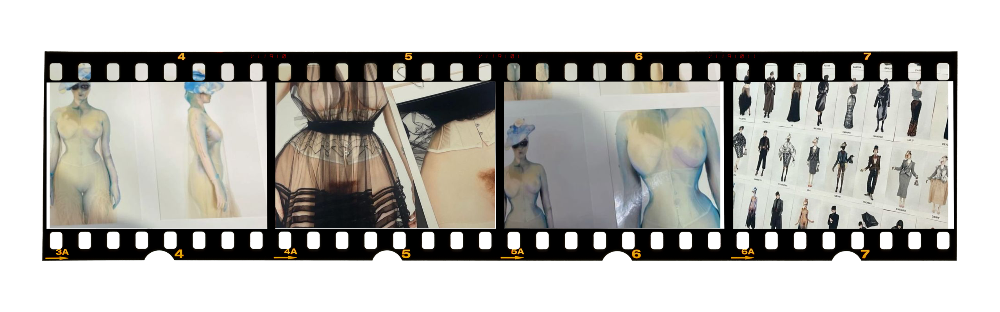

Maison Margiela Artisinal Collection
The Maison Margiela SS24' Artisinal Collection was showcased at the Spring/Summer 2024 Haute Couture Fashion Week in Paris, France. The collection was designed by John Galliano. Creative direction was also led by Galliano. Makeup was done by Pat McGrath. The collaboration amounted to fantastical and fantastic story-telling.
The Vision
"The ritual of dressing is a composition of the self. With the body as our canvas, we build an exterior expressive of the interior: a form of emotion. The Maison Margiela 2024 Artisanal Collection paints a picture of the practices and occurrences that shape the character reflected within our dress. Under Pont Alexandre III, bathed in the light of the first full moon of the year, Creative Director John Galliano captures a moment in time: a walk through the underbelly of Paris, offline. Presaged by a cinematic prelude, the show manifests in a multi-disciplinary staging seeped in the eerie, rainy ambience of Paris by night. The garments are imbued with the unconscious gestures that shape our expressions, a framework for studies of the ritual of dressing explored through haute couture techniques."